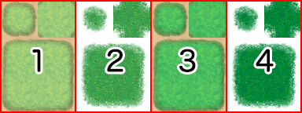
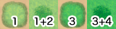

Asset Standards
It is possible to use your own original files for all kinds of assets such as images and audio.
By copying the asset file into the appropriate folder you can select the asset from the editor.
Image Assets
All images will use the PNG format.
- Animation Patterns (img/animations)
- These are primarily the images used for animations shown as effects in the Battle Screen.
1 cell contains an image that measures 192x192 in size, and 5 cells lined up horizontally are treated as a block which will be stretched vertically only as necessary, becoming 1 file. A file can contain up to 20 blocks (100 cells).
* Images used are the same size as in the previous version (VX Ace). - Battlebacks (img/battlebacks1, img/battlebacks2)
- Images used as the backgrounds for the Battle Screen.
A battleback measures 1000x740 in size, backgrounds in the battlebacks1 folder are primarily for floors, and those in the battlebacks2 folder are primarily for walls, and you can put these into any combination that you like in order to create your battleback.
The upper part of images in front-view battles and the lower part of images in side-view battles will be cropped then displayed. - Characters (img/characters)
- Images shown for the characters on the map.
The size for a character image can be changed freely (normally 48x48), and consist of 4 directions (down, left, right, up) and 3 patterns for a total of 12 patterns that will be arranged in the provided order. A file for 1 character will be arranged into 2 rows and 4 columns equaling 8 images. The size of the character will be calculated using 1/12 of the width and 1/8 of the height of this file. Moreover, characters will be shown 6 pixels above tile so that they appear more natural when on top of buildings.- It is possible treat 1 character as 1 file by including "$" at the beginning of the file name.
- Including a "!" at the beginning of the file name will prevent the image from being shifted 6 pixels and will no longer appear half transparent by bush elements. This is primarily used for objects found in the map such as doors and treasure chests.
- It is also possible to use the "$" and "!" special characters together.
- Front-view Enemies (img/enemies)
- Images for enemies that are displayed in front-view battle. You can choose any size you want for the image.
- Face (img/faces)
- Images which are displayed in the Menu Screen and message windows.
Face images are 144x144 in size, and arranged into 2 rows and 4 columns equaling 8 images. - Parallax (img/parallaxes)
- Images shown behind maps. You can choose any size you want for the image.
Like wallpaper, the top, bottom, left and right sides of the image will be connected when wanting to loop the image.
Additionally, parallax files will be treated as floors (no parallax) when there is a "!" at the beginning of the file name. - Pictures (img/pictures)
- Images which are displayed by using event commands during the game. You can choose any size you want for the image.
- Side-view Allies (img/sv_actors)
- Actor images which are displayed in side-view battle.
Please refer to [Side-view Character Standards]. - Side-view Enemies (img/sv_enemies)
- Images for enemies that are displayed in side-view battle. You can choose any size you want for the image.
- System Images (img/system)
- The various images used in the overall game.
- Balloon.png
- Asset used for actor chat balloons. The transparent area below the image is defined by the user.
- ButtonSet.png
- Buttons used when the game is displayed on devices such as smartphones which support touch controls.
This can be used for changing things like the number of items when purchasing them. - Damage.png
- Asset used for displaying damage pop-ups in the Battle Screen.
- GameOver.png
- Asset displayed on the Game Over Screen.
- Loading.png
- Asset used for the Loading Screen.
- IconSet.png
- Assets used for the icons for items, weapons, skills, etc.
- Shadow1.png
- Asset for the shadow displayed when flying a plane.
- Shadow2.png
- Asset for the shadows of allies in side-view battle.
- States.png
- Asset for the states of allies in side-view battle.
- Weapons1.png, Weapons2.png, Weapons3.png
- The weapon images that are displayed when allies perform normal attacks in side-view battle.
There are 12 different types of images for Weapons1 and Weapons2. Weapons3 has 6 different types of images. Weapons3 is defined by the user. - Window.png
- Collection of image assets that compose the windows.
- Tilesets (img/tilesets)
- Images which consist of the tiles (also known as map chips) that make up a map.
- Title Screen (img/titles1, img/titles2)
- Images displayed on the Title Screen.
The size for these images is 816x624. Titles1 contains files for the main background, and titles2 contains images for frames, etc. Use these in any combination to create the Title Screen.
Tileset Details
1 tile is 48x48 in size, and tiles need to be grouped in the 5 types of sets, A through E, below.
Additionally, the specifications for some tiles can change according to the contents set under [Mode] found in [Tilesets] in the database.
Set A
This set will be used as the lower layer when drawing the map. This set is divided further into 5 parts, with most of them being called [Autotiles], which are composed of special tiles that have their boundary lines automatically created.
Autotiles are, as a rule, arranged in a pattern composed of 6 tiles as seen in the illustration below, making up the basic structure of the tiles.
- a
- Representative Pattern (for displaying in the tile palette)
- b
- Pattern with boundaries at each corner
- c
- Group Pattern (refers to group of tiles with one in the center and 1 in each of the 8 directions)
If the autotile located in the (8,8) position from the bottom-right is transparent, that autotile will be evaluated as a "forest type". If a forest tile has the bush element assigned to it, character images will not appear as half transparent in the 8 types of tiles below which includes the bottom right and bottom left boundaries.
Part 1
These are 768x576 in size and made up of the 5-pattern blocks as in the illustration above. Basically, tiles in this part will not have a boundary created even if they touch.
Boats and ships can only travel through the tiles in this part. However, tiles in this tileset will no longer be able to be entered using boats and ships if the tileset is configured to allow players to walk on the tiles.
- Block A
- Autotiles used as ocean tiles. By placing 3 autotile basic patterns horizontally in a row, it is possible to animate them.
- Block B
- Autotiles used as deep ocean tiles. Boundaries for ocean tiles will be created only when tiles in this block touch tiles in part 1. Tiles in Block A will automatically complete the transparent color of this block. Just like Block A, by placing 3 autotile basic patterns horizontally in a row, it is possible to animate them. Moreover, boats cannot travel through tiles in this block.
- Block C
- Autotiles which decorate ocean tiles in Block A. Tiles in Block A will automatically complete the transparent color of this block. Additionally, boats and ships cannot travel through tiles in this block.
- Block D
- Autotiles used as water tiles. By placing 3 autotile basic patterns horizontally in a row, it is possible to animate them.
- Block E
- Used for waterfall tiles. You can create a group pattern by placing two tiles horizontally, and animate them by placing 3 vertically in a row. Additionally, boats and ships cannot travel through tiles in this block.
Part 2
These are 768x576 in size and composed of 4 2-pattern blocks placed vertically in a row as in the illustration above. Specifications for this part only can change according to the contents set under [Mode] found in [Tilesets] in the database.
If the tiles in this part have the counter element, they will be used as autotiles to create tables, and the bottom of the pattern will be displayed as shifted 12 pixels down when placed.
- Block A (Field Type)
- Composed using 4-pattern autotiles, and will be handled as 1 only, 1 and 2 overlapping, 3 only, 3 and 4 overlapping in the actual tileset.

↓
 - Block B (Field Type)
- It is possible to store 4 patterns, and are special tiles that can be placed over tiles in Block A in the actual tileset.
- Block A (Area Type)
- It is possible to store 4 patterns, and are tiles that can be placed over tiles in Block B in the actual tileset.
- Block B (Area Type)
- It is possible to store 4 patterns, and are tiles that can be placed over tiles in Block A in the actual tileset.
Part 3
Autotiles which will be primarily used for the appearance of buildings. These are 768x384 in size, and are composed by placing 8 tiles horizontally and 4 tiles vertically, formed using only the autotile group pattern.
By placing two or more tiles in this part together vertically when designing your map, shadows will automatically be created on the adjacent touching tile on the right side. However, shadows will not be automatically generated if the adjacent tile belongs to a part other than Part 2 (excluding Block C) or Part 5.
Part 4
Autotiles which will be primarily used for walls. These are also used for walls for dungeon instances. These are 768x720 in size. Composed by placing 8 tiles horizontally and 3 tiles vertically using autotile basic structures and those tiles placed vertically in a row using only the autotile group pattern.
By placing two or more tiles in this part together vertically when designing your map, shadows will automatically be created on the adjacent touching tile on the right side. However, shadows will not be automatically generated if the adjacent tile belongs to a part other than Part 2 (excluding Block C) or Part 5.
Part 5
These are 384x768 in size and please be sure to place the tiles here in an 8x16 arrangement. Tiles contained in this file will all be treated as normal tiles. The 3rd, 5th and 7th tiles from the top are used also for the floors of dungeon instances.
Set B through Set E
These sets will be used as the upper layers when drawing the map.
These are 768x768 in size and be sure to place the tiles here in a 16x16 arrangement.
- Leave the tile located in the top left of Set B blank as this represents nothing being placed in the upper layer.
Audio Files (Music, Sound Effects)
The file formats that are playable depend on the operating environment, so please prepare the below 2 file formats with the same file name.
- Ogg Vorbis(.ogg)
- AAC(.m4a)
* When creating a game that will be played on Windows or Mac, please prepare only the Ogg Vorbis file format. When creating a game that will be released on the web or made for Android/iOS, both file formats are required.
Video Files (Movies)
The file formats that are playable depend on the operating environment, so please prepare the below 2 file formats with the same file name.
- WebM(.webm)
- MP4 (.mp4 encoded with H.264 codec)
* When creating a game that will be played on Windows or Mac, please prepare only the WebM file format. When creating a game that will be released on the web or made for Android/iOS, both file formats are required.